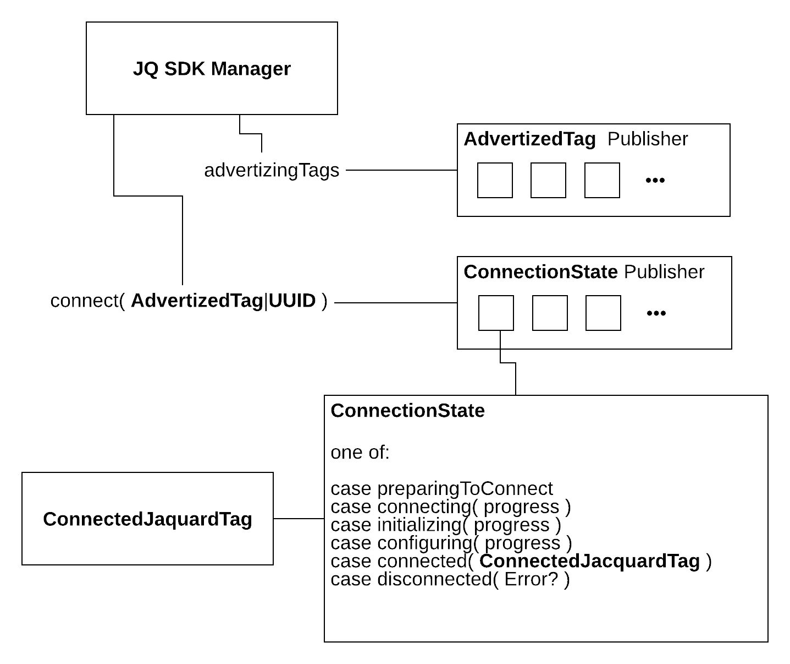
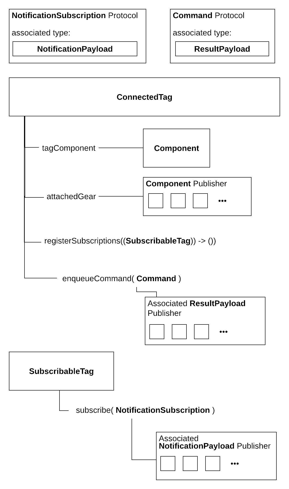

View on GitHub
View on GitHub
 API Overview Reference
API Overview Reference
API Overview
Guiding principles
The Jacquard SDK provides an easy way to interact with Jacquard tags and gear, handling all the aspects of Bluetooth and our hardware protocol. In common with any SDK dealing with hardware, using the Jacquqard SDK requires dealing with a lot of asynchronous events. The Jacquard team’s experience with this and other products has informed the design of this SDK to help you with this complexity. If you follow the patterns in our sample code you will avoid many common pitfalls and edge cases.
Making invalid state unrepresentable
The principle coined and popularized by Yaron Minsky of making illegal states unrepresentable is very relevant to a hardware SDK. The goal is that the SDK should be difficult to use incorrectly. Achieving this goal takes careful API design, and we welcome any feedback about cases where you find we have missed the mark.
There are two main tools we use to achieve this. The first is using the Swift type system to reflect instance capabilities and requirements. The second is using Combine to provide a pattern where attempting to use a stale or disconnected Tag instance is precluded (more on this in the next section).
Using Combine to handle state safely
Keeping app state correct in the face of changing connection conditions etc. can be challenging. To make this easier and safer, the Jacquard SDK leans heavily on Apple’s Combine* Functional Reactive Programming framework. In the next few introductory sections you will see references to Combine Publishers. You can read more about this approach below.
- If you are unfamiliar with Combine, or Functional Reactive Programming, Apple’s Introducing Combine and Combine in Practice 2019 WWDC presentations are a good start.
You can see in the diagram below how when a Tag is automatically
re-connected, the connect() publisher will emit a newly connected
instance with fresh state. In the documentation’s code samples (and
the sample app code) you can find demonstrations of how to easily use
Combine’s map and other operators to conveniently work with
connected tags and commands while precluding the possibility of using
a stale instance. This is extremely hard to do if you rely on instance
variables or other stateful approaches.
Connecting to Tags
A JacquardManager instance allows you to find advertising
Jacquard tags and connect to them, yielding a ConnectedTag instance
(and an updated one any time the connection is lost and
reconnected). This ConnectedTag instance is what you will use to
access the tag and gear functionality.

Read more:
ConnectedTag
Once you have obtained a ConnectedTag instance from the connect
publisher you can use it to send Commands and
subscribe to Notifications. Some commands work
with just a connection to the Tag, others require Jacquard garment or
gear attached - the attachment state can also be observed via the
ConnectedTag.

Read more: